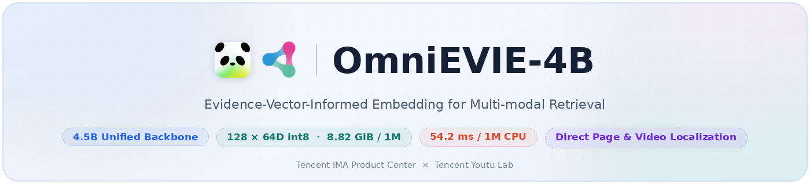
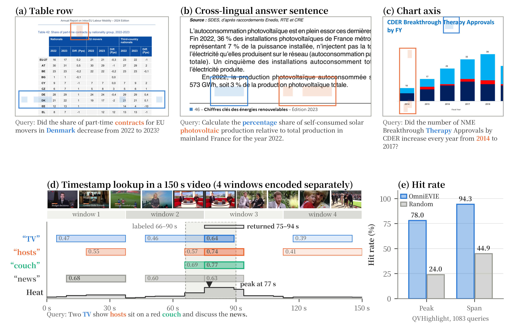
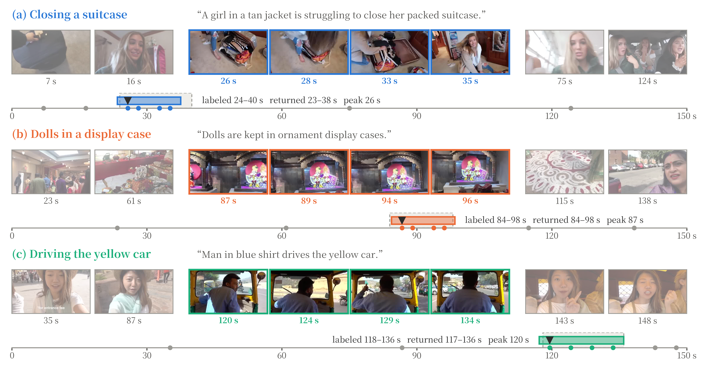
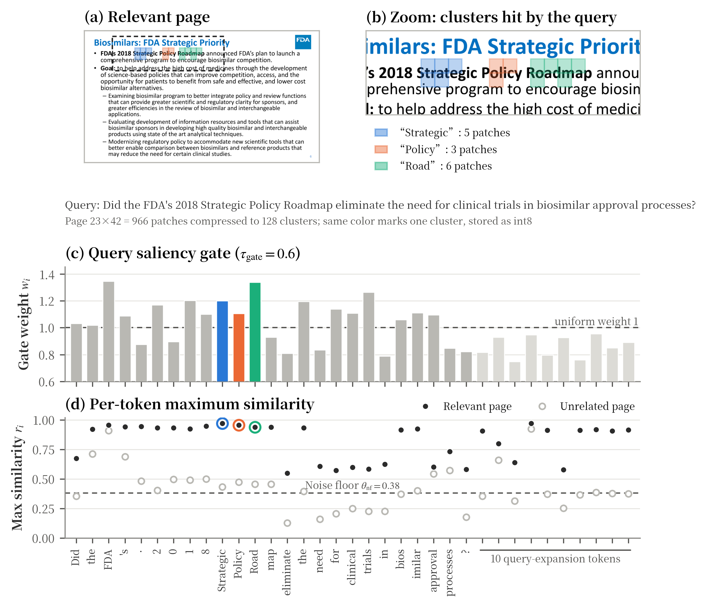
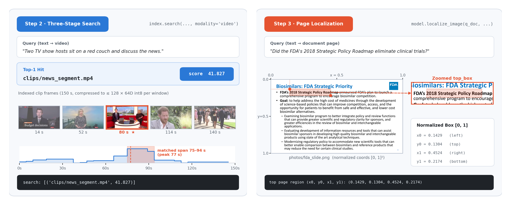
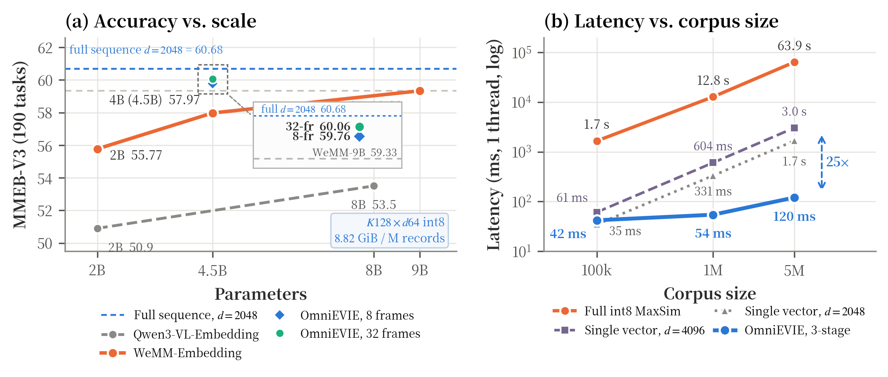

Hugging Face GitHub Technical Report MMEB-Leaderboard Top 1 (Non-Audio)
<i>Evidence lives in the details — a single cell in a dense table, a fleeting gesture in a two-minute clip, a buried clause across pages.</i>
<i>One model. Every modality. Milliseconds at million scale.</i>
---
OmniEVIE-4B is a 4.5B-parameter unified multi-modal, multi-vector retrieval model by Tencent IMA Product Center and Tencent Youtu Lab, ranking #1 on the MMEB-Leaderboard (excluding audio)—with OmniEVIE-4B (Full) at 60.68 and OmniEVIE-4B (Compressed) at 60.06 across 190 tasks (also #1 in both Text 52.97 and Agent 54.14). Built on Qwen3.5 with bidirectional full-attention layers, Prefix-MRL projection, spatio-temporal Ward clustering (ST-HAC), and a learned query saliency gate (query_gate.safetensors), it distills every document into at most 128 × 64D int8 vectors (≤ 9,472 bytes/record, 8.82 GiB per 1M records)—retrieving across a million records in 54.2 ms on one CPU thread while tracing every hit straight back to its page region or video second.
- Code & CLI: github.com/Tencent/OmniEVIE
- Technical Report: OmniEVIE_Technical_Report.pdf
- Leaderboard: TIGER-Lab/MMEB-Leaderboard (Top 1 excluding audio)
MMEB-Leaderboard Top 1 (Excluding Audio)
MMEB-Leaderboard Top 1 (Excluding Audio) — OmniEVIE-4B
<sub><i>Official TIGER-Lab/MMEB-Leaderboard snapshot (2026-11-24, sorted by Audio-Overall = 0). <b>OmniEVIE-4B (Full, 4.54B)</b> and <b>OmniEVIE-4B (Compressed, 4.54B)</b> rank <b>#1 and #2 among all non-audio models</b> (#2 and #4 overall across all 190 tasks), surpassing 9.4B baselines while leading both Text (52.97) and Agent (54.14) tracks.</i></sub>
---
Seeing Where the Answer Lives
Fine-Grained Page & Long-Video Localization
Every retrieval hit carries its own spatial or temporal coordinates—highlighting the matched table row, cross-lingual answer sentence, chart bar, or timestamp span without external OCR or video-captioning models.

<sub><i>Real retrieval hits on ViDoRe V3 pages and a 150-second QVHighlights clip (QVHighlights val, 1,083 queries: <b>78.0%</b> peak-in-segment hit, <b>94.3%</b> span intersection, 18% average span).</i></sub>
Native Video Moment Localization

<sub><i>Returned intervals and peak timestamps across three 150-second QVHighlights videos directly from the compressed multi-vector index.</i></sub>
Token-Level Alignment & Query Saliency Gate

<sub><i>Per-token cluster matches, learned saliency gate weights (τ = 0.6), and noise-floor margin (θ = 0.38) on a 966-patch page compressed to 128 int8 clusters.</i></sub>
---
A Compact Memory for Every Modality
| Feature | Specification |
|---|---|
| Parameters | 4.54B (BF16, model.safetensors) + query_gate.safetensors |
| Modalities | Text · Natural Image · Visual Document · Native Video · Agent / Tool / GUI / Memory |
| Elastic Dimensions | Prefix-MRL single head: {64, 128, 256, 512, 1024, 2048} at runtime |
| Index Footprint | 8.82 GiB / 1M records (K128×d64 int8), or 2.15 GiB / 1M (K32×d64 int8) |
| Search Latency | 54.2 ms (1M) / 120.2 ms (5M) on a single CPU thread |
| Evidence Localization | Direct page bounding box & video timestamp interval from retrieval argmax |
| License | Apache-2.0 (LICENSE.txt) |

<sub><i>Unified ST-HAC clustering, sphere-renormalized centroids, fixed-scale int8 quantization, and exact per-record byte layout.</i></sub>

<sub><i>Three-stage retrieval funnel on 1M records (14.6 ms coarse + 19.7 ms Hamming + 19.9 ms int8 = 54.2 ms single-thread CPU).</i></sub>
---
Quick Start
Install the inference and indexing package from Tencent/OmniEVIE:
bashpip install git+https://github.com/Tencent/OmniEVIE.git
flash-attn>=2.7.0is required (attn_implementation="flash_attention_2"; verified withtorch 2.7.1,transformers 5.13–5.17,flash-attn 2.8.1).
pythonfrom omnievie import OmniEVIE, QueryGate, ThreeStageIndex model = OmniEVIE.from_pretrained("tencent/OmniEVIE-4B", device="cuda") gate = QueryGate.from_pretrained("tencent/OmniEVIE-4B") # 1. Encode and index documents across modalities index = ThreeStageIndex() for path in ["photos/fda_slide.png", "clips/news_segment.mp4", "notes/report.txt"]: modality, vectors = model.encode_document(path) index.add(path, vectors, modality) index.save("index.pt") # 2. Retrieve with three-stage index + learned query saliency gate query = model.encode_query(text="Two TV show hosts sit on a red couch and discuss the news.", target="video") weights = gate.weights(query.vectors, query.vision_mask, query.aug_mask, query.has_text) hits = index.search(query.vectors, weights=weights, modality="video", topk=3) print("search:", hits) # 3. Direct evidence localization on a matched page q_doc = model.encode_query(text="Did the FDA's 2018 Strategic Policy Roadmap eliminate clinical trials?", target="image") w_doc = gate.weights(q_doc.vectors, q_doc.vision_mask, q_doc.aug_mask, q_doc.has_text) page_loc = model.localize_image(q_doc, "photos/fda_slide.png", weights=w_doc) print("top page region (x0, y0, x1, y1):", page_loc.top_box)
Example output:
textsearch: [('clips/news_segment.mp4', 41.827)] top page region (x0, y0, x1, y1): (0.1429, 0.1304, 0.4524, 0.2174)

<sub><i>Visualized output of the Quick Start snippet: three-stage text-to-video retrieval on clips/news_segment.mp4 (left) and normalized top_box evidence localization on photos/fda_slide.png (right).</i></sub>
---
Evaluations & Benchmarks

<sub><i>(a) MMEB-V3 overall accuracy (190 tasks) across model scales; (b) single-thread CPU retrieval latency from 100K to 5M records.</i></sub>
MMEB-V3 (190 Tasks)
| Model | All (190) | Text (53) | T-RR | T-IF | T-LC | T-MC | T-GR | Agent (47) | Tool | GUI | Memory | MCMR |
|---|---|---|---|---|---|---|---|---|---|---|---|---|
| Qwen3-VL-Embedding-2B | 50.90 | 39.20 | 16.60 | 40.60 | 53.10 | 61.20 | 58.00 | 39.30 | 42.60 | 30.40 | 28.40 | 42.00 |
| Qwen3-VL-Embedding-8B | 53.50 | 42.50 | 18.20 | 44.80 | 58.00 | 61.20 | 61.20 | 38.40 | 41.30 | 33.50 | 22.80 | 38.00 |
| WeMM-Embedding-2B | 55.77 | 45.34 | 26.29 | 49.30 | 61.90 | 59.72 | 58.74 | 44.05 | 46.23 | 38.87 | 35.38 | 42.51 |
| WeMM-Embedding-4B | 57.97 | 47.88 | 30.01 | 52.02 | 62.43 | 60.14 | 61.09 | 48.06 | 50.58 | 41.44 | 39.19 | 41.91 |
| WeMM-Embedding-9B | 59.33 | 48.76 | 31.82 | 52.78 | 64.48 | 58.28 | 61.12 | 50.10 | 52.95 | 43.33 | 38.65 | 49.34 |
OmniEVIE-4B (K128×d64 int8, 8-fr) | 59.76 | 51.77 | 26.36 | 69.65 | 70.71 | 67.75 | 63.58 | 54.03 | 58.84 | 41.34 | 37.35 | 47.39 |
OmniEVIE-4B (K128×d64 int8, 32-fr) | 60.06 | 51.77 | 26.36 | 69.65 | 70.71 | 67.75 | 63.58 | 54.03 | 58.84 | 41.34 | 37.35 | 47.39 |
OmniEVIE-4B (Full Sequence d=2048) | 60.68 | 52.97 | 27.46 | 70.81 | 73.04 | 68.55 | 64.60 | 54.14 | 58.81 | 42.00 | 37.60 | 49.74 |
MMEB-V2 (78 Tasks)
| Model | All (78) | Image (36) | Video (18) | VisDoc (24) |
|---|---|---|---|---|
| Qwen3-VL-Embedding-2B | 73.25 | 74.96 | 61.87 | 79.22 |
| Qwen3-VL-Embedding-8B | 77.82 | 80.12 | 67.15 | 82.36 |
| WeMM-Embedding-2B | 77.94 | 79.63 | 70.82 | 80.75 |
| WeMM-Embedding-4B | 79.19 | 80.84 | 72.11 | 82.04 |
| WeMM-Embedding-9B | 80.58 | 81.87 | 74.31 | 83.34 |
OmniEVIE-4B (K128×d64 int8, 8-fr) | 77.24 | 78.09 | 66.49 | 84.02 |
OmniEVIE-4B (K128×d64 int8, 32-fr) | 77.96 | 78.09 | 69.62 | 84.02 |
OmniEVIE-4B (Full Sequence d=2048) | 78.56 | 78.70 | 70.08 | 84.70 |
ViDoRe V3 Visual Document Retrieval (8 Domains × 6 Languages, graded nDCG@10)
| Model | Index Representation | Mean | CS | Energy | Fin (EN) | Fin (FR) | HR | Industrial | Pharma | Physics |
|---|---|---|---|---|---|---|---|---|---|---|
| Nemotron-ColEmbed-V2-8B | Full multi-vector | 63.76 | 79.35 | 70.05 | 67.72 | 51.50 | 66.92 | 56.81 | 67.39 | 50.31 |
| Qwen3-VL-Embedding-8B | Single-vector | 59.00 | 75.86 | 64.47 | 60.88 | 44.70 | 58.88 | 47.78 | 66.05 | 48.31 |
OmniEVIE-4B (Full Sequence d=2048) | Prefix-MRL upper bound | 64.34 | 79.89 | 71.25 | 67.76 | 53.45 | 66.33 | 57.03 | 68.11 | 50.87 |
OmniEVIE-4B (K128×d64 int8) | 7.87 GiB / 1M pages | 62.96 | 78.73 | 69.94 | 66.01 | 52.52 | 64.68 | 55.08 | 66.47 | 50.28 |
OmniEVIE-4B (K32×d64 int8) | 2.15 GiB / 1M pages | 61.16 | 78.13 | 68.61 | 64.52 | 49.43 | 60.90 | 51.73 | 65.73 | 50.22 |
Single-Thread CPU Retrieval Latency (ms)
| Method | 100K | 1M | 5M | Speedup vs. Full int8 (1M) |
|---|---|---|---|---|
Full int8 MaxSim | 1,657 | 12,781 | 63,892 | 1.0× |
Exact Single-Vector (d=4096) | 60.9 | 604.0 | 3,039 | 21.2× |
Exact Single-Vector (d=2048) | 34.6 | 331.0 | 1,666 | 38.6× |
OmniEVIE-4B Three-Stage (N1=5000, N2=1000) | 41.9 | 54.2 | 120.2 | 236× |
---
Repository Files
| File | Description |
|---|---|
model.safetensors | OmniEVIE-4B backbone and Prefix-MRL projection weights (BF16, 4.54B params) |
query_gate.safetensors | Learned query saliency gate (salience_v1) |
config.json | Model configuration (head_dims: [64, 128, 256, 512, 1024, 2048], is_causal: false) |
processor_config.json | Image and video processor configuration |
tokenizer.json, tokenizer_config.json | Tokenizer files |
SHA256SUMS | SHA-256 checksums for all weight and configuration files |
LICENSE.txt, NOTICE | Apache-2.0 license and third-party notices |
---
Citation
bibtex@article{wang2026omnievie, title = {OmniEVIE: Evidence-Vector-Informed Embedding for Multi-modal Retrieval}, author = {Wang, Zifei and Wen, Wei and Ji, Qiang and Zhang, Qian-Wen and Qiao, Ruizhi and Liu, He and Sun, Xing and Lin, Qiang}, year = {2026}, url = {https://github.com/Tencent/OmniEVIE} }
License
The code and models released under OmniEVIE, including OmniEVIE, OmniEVIE-2B, and OmniEVIE-4B, are licensed under the Apache License 2.0. See LICENSE.txt and NOTICE for full terms and third-party attributions.
Contact
- Zifei Wang: zifeiwang@tencent.com
- Wei Wen: jawnrwen@tencent.com